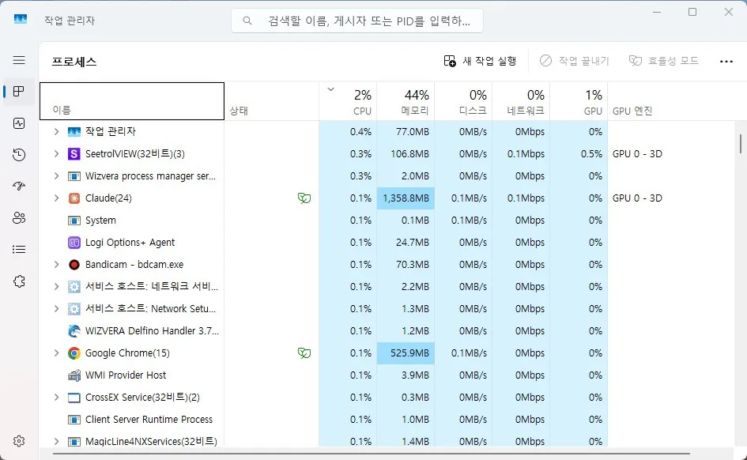

성능
CPU 사용률 100% 원인과 점검 순서
특정 작업 없이도 CPU 사용률이 계속 100%에 가깝게 유지되는 경우
CPU 사용률이 계속 높게 유지되는 문제는 디스크 사용률 100%와는 원인이 다릅니다. 먼저 작업 관리자에서 어떤 프로세스가 CPU를 많이 쓰는지부터 확인하는 것이 순서입니다.
특정 프로세스 하나가 확실히 높다면 그 프로그램을 재설치하거나 업데이트하는 것으로 해결되는 경우가 많습니다. 반면 여러 프로세스가 조금씩 나눠서 전체를 채우고 있다면 백그라운드에 실행 중인 프로그램 자체가 너무 많다는 신호입니다.
전체 사용률은 낮아 보이는데 유독 버벅인다면, 코어 하나만 100%에 붙어 있는 경우일 수 있습니다.
이 가이드가 필요한 상황
- 웹 서핑처럼 가벼운 작업에서도 CPU 사용률이 계속 90~100%를 유지한다.
- 특정 프로그램을 실행하지 않았는데도 팬 소음과 발열이 심해진다.
- 작업 관리자를 열지 않았을 때 유독 컴퓨터가 느려진다.
먼저 확인할 항목
- 가장 CPU를 많이 쓰는 프로세스 확인 — 작업 관리자 프로세스 탭에서 CPU 열을 클릭해 정렬한 뒤 상위 프로세스를 확인하세요.

- 코어별 사용률 확인 — 성능 탭에서 '그래프 변경 > 논리 프로세서'로 코어별 사용률을 확인하세요.
- 안전 모드에서 재현 확인 — 안전 모드로 부팅해 같은 증상이 나타나는지 확인하세요.
- 백신 전체 검사 — 신뢰할 수 있는 백신으로 전체 검사를 진행하세요.
원인을 더 정확히 나누는 방법
특정 프로세스 하나가 원인일 때
해당 프로그램을 최신 버전으로 업데이트하거나 재설치해보세요. 특히 브라우저나 백신, 클라우드 동기화 프로그램이 버그로 CPU를 과도하게 쓰는 경우가 흔합니다.
여러 프로세스가 나눠 쓸 때
시작 프로그램이 너무 많이 등록되어 있을 가능성이 큽니다.
확인 결과에 따른 다음 단계
- 특정 프로세스가 확실히 높을 때 — 그 프로그램을 업데이트·재설치하거나, 필요 없다면 제거하세요.
- 안전 모드에서는 정상일 때 — 시작 프로그램이나 백그라운드 서비스를 하나씩 비활성화하며 범위를 좁히세요.
- 백신 검사에서 악성코드가 발견될 때 — 즉시 격리·삭제한 뒤 CPU 사용률을 확인하세요.
피해야 할 실수
- 어떤 프로세스가 원인인지 확인하지 않고 바로 재설치·초기화하는 것
- 전체 사용률만 보고 코어별 사용률은 확인하지 않는 것
자주 묻는 질문
- System Idle Process가 CPU를 많이 쓰는데 문제인가요? 아닙니다. 오히려 수치가 높을수록 정상입니다.
- svchost.exe가 CPU를 많이 쓰면요? 세부 정보를 펼쳐 어떤 서비스인지 확인해보세요.
- 재부팅하면 일시적으로 괜찮아지는데 반복되면요? 시작프로그램 목록을 정리해보세요.
최종 검토일: 2026-08-07